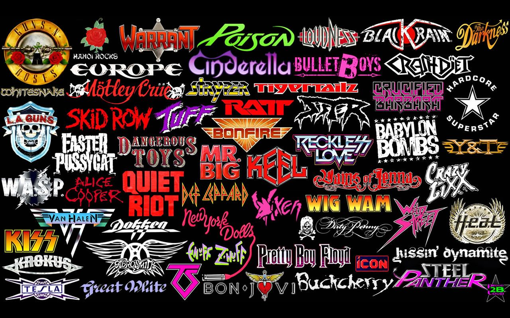

ROCK
¿Que es el Rock?
Se conoce como Rock a un conjunto de géneros variados de música popular, descendientes más o menos del Rock n’ Roll original nacido en los Estados Unidos en la década de 1950, como fruto de una fusión entre la música Country y el Rhythm and Blues.
Típicamente, el Rock es un género reconocido por la predominancia de la guitarra eléctrica, con canciones de compás 4/4 y una estructura verso-estribillo. Pero en su evolución particular es difícil hoy en día dar con características realmente comunes.
En líneas generales las temáticas de sus canciones apuntan a lo social, lo político y también el amor y la emoción, haciendo énfasis sobre todo en aspectos como la composición, la performance en vivo y la originalidad.